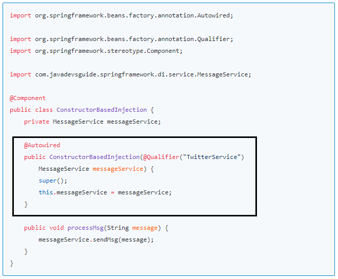

In this article, we will learn how to use constructor-based dependency injection in Spring Applications.
We can use either Spring Annotation Based Container Configuration or spring Java-based container configuration or a mix of both to demonstrate this example
Constructor-based DI is accomplished by the container invoking a constructor with a number of arguments, each representing a dependency.
In the below diagram, the highlighted code shows a Constructor-based dependency injection example.
Let's create a spring configuration file using java class AppConfiguration
which is annotated with
@Configuration annotation.
This is equivalent to spring XML configuration file without beans
definition.
package com.javadevsguide.springframework.di.config;
import org.springframework.context.annotation.ComponentScan;
import org.springframework.context.annotation.Configuration;
@Configuration
@ComponentScan("com.javadevsguide.springframework.di")
public class AppConfiguration {
}
MessageService interface and provide more than two implementations
for it.
public interface MessageService {
public void sendMsg(String message);
}
Let's implement the MessageService interface. There are many ways to send a
message like through email, SMS, twitter etc.
@Service("EmailService")
public class EmailService implements MessageService{
public void sendMsg(String message) {
System.out.println(message);
}
}
@Service("SMSService")
public class SMSService implements MessageService{
public void sendMsg(String message) {
System.out.println(message);
}
}
@Service("TwitterService")
public class TwitterService implements MessageService{
public void sendMsg(String message) {
System.out.println(message);
}
}
Note that there are multiple implementations for MessageService interface so
to avoid ambiguity, let's use
@Qualifier
annotation.
It's time to demonstrate the usage of Constructor-based dependency injection. To avoid decoupling always use interfaces or abstract base classes as an instance variable and constructor arguments. In this example, we have used the MessageService interface.
import org.springframework.beans.factory.annotation.Autowired;
import org.springframework.beans.factory.annotation.Qualifier;
import org.springframework.stereotype.Component;
import com.javadevsguide.springframework.di.service.MessageService;
@Component
public class ConstructorBasedInjection {
private MessageService messageService;
@Autowired
public ConstructorBasedInjection(@Qualifier("TwitterService")
MessageService messageService) {
super();
this.messageService = messageService;
}
public void processMsg(String message) {
messageService.sendMsg(message);
}
It's time to test the usage of Constructor-based dependency injection. Let's create an IOC container object
that is an ApplicationContext object and get the beans from it.
import org.springframework.context.ApplicationContext;
import org.springframework.context.annotation.AnnotationConfigApplicationContext;
import com.javadevsguide.springframework.di.config.AppConfiguration;
import com.javadevsguide.springframework.di.constructor.ConstructorBasedInjection;
public class Application {
public static void main(String[] args) {
ApplicationContext applicationContext = new AnnotationConfigApplicationContext(AppConfiguration.class);
ConstructorBasedInjection constructorBasedInjection = applicationContext.getBean(ConstructorBasedInjection.class);
constructorBasedInjection.processMsg("twitter message sending ");
}
}
Note that we have used AppConfiguration class annotated with @Configuration for
configurations.
In this article, we have demonstrated spring dependency injection via the constructor.